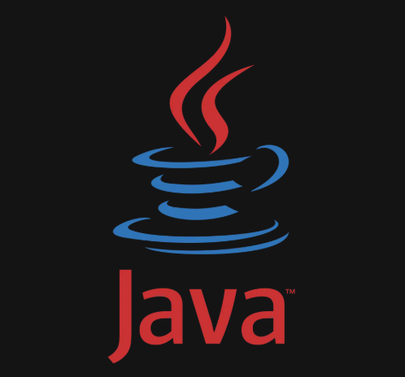
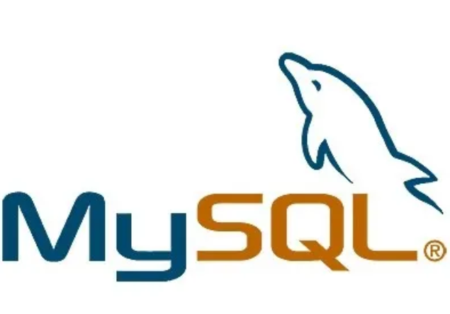
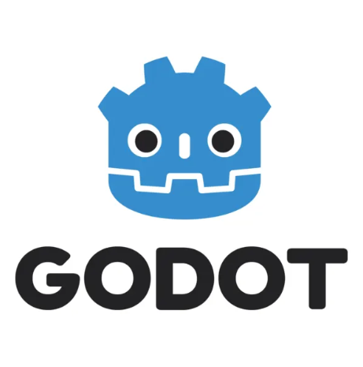

Desarrollo de Software - Programación - Produccion de Video - Inglés C1



Soy estudiante de Ingeniería en Sistemas Computacionales en el Instituto Tecnológico de Oaxaca. Desde temprana edad he sentido una fuerte atracción por la tecnología, lo que me ha llevado a explorar y comprender a fondo el funcionamiento de las aplicaciones. Actualmente me desempeño en el desarrollo de software y en proyectos de programación que abarcan la creación de videojuegos y el diseño de interfaces.
Cuento con experiencia en Java y SQL, así como en el motor de videojuegos Godot. He participado en el desarrollo backend de diversas aplicaciones utilizando Java y bases de datos, y recientemente completé el desarrollo de un videojuego propio.
Tambien cuento con un dominio fluido del idioma inglés, cercano al nivel C1 según el Marco Común Europeo de Referencia. Esto me permite comunicarme con eficacia en entornos profesionales, leer documentación técnica, redactar informes y colaborar en proyectos internacionales sin dificultad.
Adicionalmente, poseo conocimientos en el área de fotografía y video, lo que me permite grabar, editar y producir largometrajes de eventos sociales como bodas, bautizos y cumpleaños, además de proyectos personales como la gestión de un canal de YouTube.
¿Tienes alguna pregunta o propuesta? No dudes en contactarme.
Roque Antonio Cruz Santiago
roque.cruz@ejemplo.com
+52 55 1234 5678
Ciudad de México, México